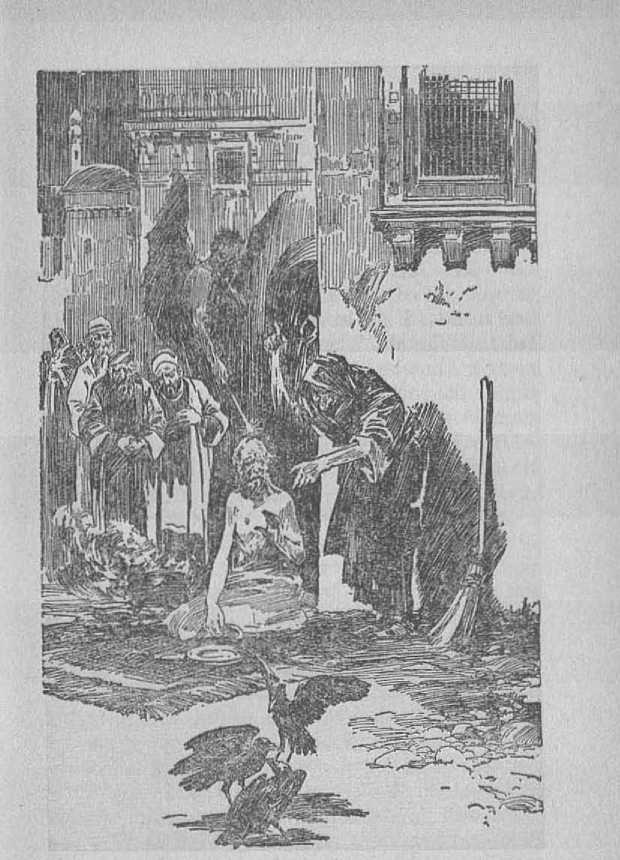
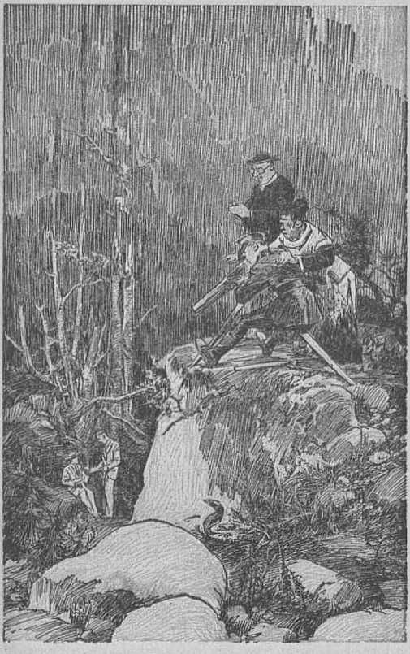

explained in
Seven Bible Treatises
by
J. F. RUTHERFORD
Page
8 Jews
11 Rulers
20 Holiness
28 Job
37 Esther '
40 Ruth
64 Twenty-third Psalm
•K
MLUions in “Christendom” today are cocksure they are of God's chosen and favorite religious organization. Bitter disappointment and disillusionment await them soon.
This booklet makes plain the Scripture test by which the reader may determine who are hypocrites, who deceived ones, and who the true servants of Jehovah God. Read and know!
Copyrighted 1934 and Published by
WATCH TOWER BIBLE AND TRACT SOCIETY International Bible Students Association Brooklyn, New York, U. S. A.
Made in the United States of America
Branch Offices:
London, Magdeburg, Paris, Toronto, Strathficld, Cape Town, Berne, Copenhagen, Stockholm, and other cities.
THE JEWS have held a place unique and peculiar amongst the peoples of earth. There are millions of people on earth who are called Jews but who in fact are not Jews within the proper meaning of that term. The history of that people, in brief, is this: Abraham was selected by Jehovah and sent out of Chaldea, his native land, into the land of Canaan. Because of his faithfulness and obedience in doing the will of God Abraham is given a prominent place in the outworking of God’s purposes concerning the world and he is called 'the father of the faithful’. Isaac was a son of Abraham, whom the Lord God particularly favored. One of the sons of Isaac was named Jacob. Jehovah caused Jacob’s name to be changed to that of Israel, and from him the nation of Israel takes its name. He had twelve sons, and each son became the head of a tribe. Judah was one of his sons, and the head of the tribe of Judah. Just before he died Jacob caused his sons to be brought into his presence, when he uttered a prophecy to them and said (Genesis 49:10): “The sceptre shall not depart from Judah, nor a lawgiver from between his feet, until Shiloh come; and unto him shall the gathering of the people he.”
This prophecy definitely settles the matter that the Redeemer and Deliverer of the human race from the oppressive hand of Satan must descend from the tribe of Judah. "Shiloh” is one of the names given to Christ Jesus, the Savior of the world, and the Bible record is that Jesus the man was of the tribe of Judah. The name Jew comes from the word Judah, which means 'giving praise to Jehovah’. True to the name, Christ Jesus at all times has given praise to Jehovah God and has at all times been wholly devoted to God and has always served the cause of righteousness. Flo is the true Judean.
Not every one who claims to he a Jew, and who speaks the Hebrew language, is a Jew within the meaning of the Scriptures. A man may be a natural descendant of Abraham and of the tribe of Judah and yet not be a Jew. Before anyone can truly be a Jew within the meaning of the Scriptures he must have faith in God like that had by Abraham and he must be devoted to the service and praise of Jehovah God. if one is a descendant of Judah, and has the marks outwardly of a Jew, and yet does not believe and serve God and Jesus Christ, he is not really a Jew and is not entitled to be known by that name.
The Scriptures furnish an abundance of proof that during the thousand-year reign of Christ Jesus, Jehovah’s great King, the peoples of earth who are obedient to the law of that kingdom will be brought to perfect conditions and live on the earth. It has often been said that all who receive the blessings of the kingdom under Christ must become Jews. The Scriptures do not warrant any such conclusion, but, on the contrary, show that the rule is exactly the reverse. The wrongful conclusion has been reached for the reason of not properly applying the Scriptures. The people now on earth and which are called Jews are a commercial people. Among them are some of the richest and most avaricious men the world has ever known. Some of the chief men of Big Business are called Jews. Many of these people are very arrogant, selfimportant and extremely selfish. They have little or no faith in God’s Word and do not believe at all in the Lord Jesus Christ as the Savior of man. It does not seem at all reasonable that at the beginning of the earthly blessings in the kingdom the Lord would extend his first favors to such people. It is not Scriptural. On the contrary, the Scriptures show that the people now called Jews will have a harder time during the reign of Christ than many peoples of other nationalities.
David, the king of Israel, was of the tribe of Judah. He was a type used to foreshadow Christ Jesus, the beloved Son of God, the earth’s rightful King, and concerning whom it was prophetically written: 'And Jehovah shall give him the throne of his father David.’ It is written, in Ezekiel 37:24: "And David my servant shall be king over them.” These scriptures refer to Christ Jesus, who is really the first amongst all Judeans. There is no other means whereby the human race can have salvation except by Christ Jesus. At Acts four it is written: 'Christ is the chief one; neither is there salvation in any other; for there is no other name under heaven whereby we must be saved.’
What the Scriptures concerning Judeans really moan is this: That all human creatures that are ever saved, and come into Jehovah’s organization, must serve and give praise to Jehovah God; and, since Judah means 'praise of Jehovah’, all who thus serve faithfully will be true Judeans. In the 150th Psalm it is written that by the end of the millennial reign of Christ every creature that breathes will be found giving praise to Jehovah. The reason is that only those who exercise faith in God and in Christ Jesus, and render themselves in obedience to that righteous kingdom, shall live, and all these stfall praise the Most High.
When Jehovah began the selection of those who should be associated with Christ Jesus in his heavenly kingdom he laid hold upon or selected those who have faith like unto the faith of Abraham and who give praise to Jehovah God, as does Jesus Christ. This is clearly shown by the scripture at the second chapter of Hebrews. Likewise those who shall receive the blessings of God’s kingdom must first believe that Jehovah is the Most High, and that Christ Jesus is the Savior of the world, and then must devote themselves to the Lord and be obedient unto the laws of his kingdom. This has no reference whatsoever to nationalities, as they now exist. The blackest man from Africa will have the same opportunity as the white man of America. There will be no race distinction. Because men have been told that they must become Jews if they would live many have refused to hear the Scriptural truths. These have seen the selfish and commercial spirit of men called Jews and have had no desire to be of that class. When we see that the true moaning of the word ‘' Jew” or “Judean” is that such must serve and praise Jehovah God, then the whole matter appears different.
Since the Jews or Israelites were the typical people of God, and were specially favored by being brought into a covenant with God, and since Jesus conlinecphis preaching of the gospel to them, and since they rejected Jesus and crucified him, why should it be expected that God would give them any favors whatsoever in his kingdom? The fact is that Jesus told those Jews that it would be harder for them to bring themselves into harmony with the kingdom than it would be for the heathen nations. The ancient people of Tyre wore a selfish, commercial people, and the people of Sidon worked together with the rulers of Tyre to carry on their selfish interests. Jesus did not preach to the people of Tyre and Sidon, and therefore they had no knowledge of the kingdom. To the Jews Jesus said: T£ the mighty works that have been done in your midst had been done in Tyre and Sidon, they would have repented in sackcloth and ashes. It shall be more tolerable for Tyre and Sidon in the day of judgment than for you.’ The people of Sodom were a wicked people, but they wore ignorant of God’s purposes. To the unfaithful Jews Jesus said (Matthew 11:24): "But I say unto you, That it shall be more tolerable for the land of Sodom in the day of judgment, than for thee.”
When the nation of the Jews repudiated their covenant with God and crucified Christ Jesus they were justly entitled to receive complete destruction. Jehovah God, however, declares he will have mercy upon them. The Devil blinded the Jews, just as he now blinds many who think they are Christians. Not so, however, with the faithful remnant of the Jews. Concerning them the apostle’s words are: "As touching the election, they [the faithful Jews who did not become blind] are beloved for the fathers’ sakes.” (Domans 11:28) The fathers in Israel were such men as Abraham, Isaac, Moses, Jacob, David, Samuel and others named at Hebrews elevon. They were faithful, and hence beloved of God, and God extended his love to the remnant of Israel by offering them an opportunity to become a part of the election. These faithful mon God will make the visible rulers in all the earth. To them he gave his word of promise that all the families of the earth shall be blessed with a full opportunity to serve him and live. His promises to the fathers he will keep inviolate. Therefore, when the kingdom is in full sway the way will be made so clear that all people of all nations may know the way that leads to life, but the Jewish nation will have no advantage over others. All who live must render themselves faithfully in obedience to the kingdom. All must do the will of God and give praise to the name of the Most High. That is the true meaning of the word “Judeans’’ or “Jews”. Christ Jesus, the great antitypical David, is King over all, and unto him, the real Judean, the great Shiloh, shall the gathering of the people be. They will come and learn the truth in the kingdom of Christ and find that he is their Redeemer, Deliverer and Savior. All of the prophecies concerning the blessings of the people on earth focus upon Christ Jesus. It is therefore of greatest importance that the peoples of earth just now have an opportunity to learn the truth concerning God, Christ Jesus, and the great King whom Jehovah has placed upon his throne. Jehovah is now causing these truths to be made known to the people by sending to your door his witnesses who bring to you publications explaining the Scriptures. When this witness work is done and completed by his grace, then Christ Jesus will dash to pieces the wicked organization that has so long kept the people in blindness. He will make a clean-up of the things of earth; and then will follow everlasting peace, during which all nations, families and peoples of earth shall be given a fair opportunity to know and to obey the laws of God’s kingdom. ’ Those who now embrace the truth, and serve God and render themselves in obedience unto him, will be the first amongst the earthly Judeans, and hence the first to receive the blessings of the kingdom of the Most High.
Because the nation of Jews were God’s covenant people Jesus preached to them and gave them the first opportunity to become a part of his kingdom. When they rejected Christ Jesus God cast them away, and they have since been God’s enemies because of their blindness. The day is not far distant when all peoples of the earth shall know that Jehovah is God and that Christ is King; and that will mark the time when blindness shall be removed from men, and then the Jews will have an opportunity to know and to obey God and his Christ. Paul wrote to the Gentiles, at Romans 11:15: “For if the easting away of them be the reconciling of the world, what shall the receiving of them be, but life from the dead?” The Jews who then receive and obey the truth will be like people returning from the dead. In fact it will be at the time when those who are dead, both Jews and Gentiles, shall be awakened out of death and given an opportunity to serve God. Seeing that great day coming the apostle exclaimed: “0 the depth of the riches both of the wisdom and knowledge of God!” The time is come when all who live shall know and praise Jehovah’s name, and then they will be true Judeans.
THE visible rulers of the nations of earth are imperfect men. Regardless of how much they might desire to do perfectly, they cannot do so. Like all other men, as stated by the prophdt of God, they are born imperfect. The psalmist, at 51:5, states: '‘Behold, I was shapen in iniquity, and in sin did my mother conceive me.” We should not expect more of men than they can really do. There are many dishonest men among the rulers of the world, and there are also those who are honest and sincere and who desire to serve the best interests of the people. What I have to say concerning the rulers is not a caustic criticism, but a plain statement of the facts as they actually exist. An understanding of the facts and the reason therefor will help us to appreciate God's gracious provision for placing on earth perfect rulers, who will rule in righteousness, and this he will do in his own due time.
Because of the disobedience of God’s law man was expelled from Eden, and thereafter all men have been born as imperfect creatures by reason of inherited sin. Men have put forth efforts to form governments for themselves, and God has permitted them to take their own course and exercise free agency. The stronger men became the leaders and the weaker ones have had to submit; therefore the peoples of earth are divided into two general classes, to wit, the rulers and the ruled.
Man, being permitted to exercise freely his own will, and being imperfect, became an easy victim of the wily Satan, the enemy of God and of man. All earthly rulers were turned away from God by reason .of the wicked influence of Satan. Then in due time Jehovah selected the peoples of Israel for himself that they might be given a favorable opportunity to be obedient to him and to establish an ideal government. He gave them a code of perfect laws and told them plainly that in order to succeed they must have no other God besides himself. The Israelites were unfaithful and fell away from God, yielding to the seductive influence of Satan.
When Jesus Christ.came to earth God then and there began the selection of men for a new nation. Christ Jesus, operating with his faithful apostles, established the true Christianity, Thereafter the peoples of many nations embraced the faith of Christ and his apostles, but it was only a short time until the stronger men amongst the organization became the leaders, and quickly these made an alliance with the political and commercial strong men of the nations. Thus they fell under the seductive influence of the wily foe Satan. It is now these leading nations of the earth that are called “Christendom”, which is a misnomer. They claim to bo Christian, but are not. Jerusalem, as shown by many scriptures, was a type of “Christendom”, and therefore foreshadowed what “Christendom” would do and what would be the final result upon “Christendom”.
Jehovah God by his Word, the Scriptures, has given sound counsel or advice to all who desire to do right. Israel failed, and was destroyed because that people disregarded the counsel of God. "Christendom” has failed for the same reason, and will suffer the same fate. Jehovah God by his prophet Jeremiah says of Jerusalem, the type, and of “Christendom”, the antitype, If they had stood by my counsel and had caused the people to hear my words, then they would have turned away from evil ways and would have saved themselves much trouble.’
The rulers of “Christendom” have claimed to be Christian and to rule by divine authority. Being imperfect men they could not of themselves establish a perfect government, but had they given heed to the counsel of Jehovah God and followed his Word they would have been ready to receive the kingdom of God at the second coming of Christ Jesus and the peoples of earth would have been saved from the greatest trouble that will ever afflict human creation. In 1914 Jehovah placed Christ Jesus upon his throne and then made to appear before all "Christendom” the evidence that the time had come for the kingdom of God. The rulers of the earth were warned to forsake Satan’s organization and turn to Jehovah, but they disregarded that warning. Time and again since then they have been told that the world war, trouble, distress and perplexity upon the nations of the earth are the result of Satan’s effort to destroy mankind because be sees that his time to rule is at an end. The rulers have refused to heed the warning, hut have gone on in their wrongful way. Jehovah God sends forth the true followers of Christ Jesus, whom he has made his witnesses, and these he commands to continue to give warning to the rulers, to the end that they may never be heard to say that they knew nothing about the kingdom of God as being at hand.
The political party in power has its men in office, who are the tangible rulers, and behind the scene are those of greater power, to wit, the commercial giants. These are supported by the religious leaders, who tell the people that the government now in existence is God’s kingdom. These rulers are charged with all the ills tiiat affect the people. Whether the charges are true or not, everyone knows that the people are now suffering. Another great political party desires to get into power, and the spokesmen thereof denounce those who are ruling as dishonest men. If the party now out of power is put in power the conditions will not change, but the people continue to suffer. Government by imperfect men cannot bring the relief the people so much desire. What, then, is the reason? and what shall he done?
The reason is that the rulers are imperfect creatures and that all those who have to do with the ride entirely disregard the counsel of Jehovah God and follow the advice of men and all fall easy victims to the wily enemy Satan. No imperfect creatures can erect a perfect government on earth, and the people are foolish to longer look to imperfect men for an ideal government.
What, then, shall he done? The answer is found in the Scriptures, and it is this: Let I he people know and understand that Jehovah is God, that Christ Jesus is the world’s rightful ruler, that the time has come for the establishment of God’s kingdom, and that the kingdom will be true and righteous; and the people believing this will begin to see the way of relief. Jehovah promised that he would bring about such a righteous government, and he always keeps his promises. Jehovah has kept his hand off the world affairs until his own due time to act. Ue has permitted men to have full and fair opportunity to set up their ideal of a government. The time of waiting has ended, and now Jehovah has placed Christ Jesus in control. The present trouble upon the earth is due to the fact that Satan is attempting to turn all men away from God and to destroy the race. Satan launched the world war, in 1914, for the very purpose of destroying mankind. God stopped that war in 1918 and thus held back the destruction of the race until he sent forth his witnesses to tell the people that Jehovah is God, and that his kingdom is at hand. Today Jehovah’s witnesses are doing that very work, and as soon as their work of giving the testimony is completed Satan and his world will be completely wiped out. Then what?
RIGHTEOUS RULERS
The destruction of wickedness in the earth is good news to all honest people. The establishment of the government of righteousness is greater and better news. Christ Jesus, the world’s great King, will always be invisible to man, but be will have on earth visible representatives or rulers. God caused the apostle Paul to give a brief history, as stated at the eleventh chapter of Hebrews, of a few true and faithful men who lived and died before Jesus came to earth. There it is written of them that they had faith in God’s Word and his coming kingdom, and they saw that the day would come when God would establish a righteous government on earth and which would be heaven-ruled. Having such faith they endured all manner of persecution for righteousness’ sake and all of them died martyrs to the cause of righteousness.
In the meantime God has been taking out from the world a small number of creatures to be associated in his kingdom with Christ Jesus, and in the kingdom these also will be invisible to man. This work of preparing the associates of Christ is now about completed, and the last of those on earth are now, by God’s grace, giving the final witness to the people. The Scriptures furnish complete proof that the faithful men of old, some of whom are named by the apostle in Hebrews the eleventh chapter, God will raise up out of death, that is to say, he will bring them back to life and back to the earth. They will come, not as imperfect men, but as perfect creatures moved always by honesty, and will do what is right. They will trust implicitly in and serve Jehovah God and Christ Jesus and will stand in the counsel of the Lord. They will be under the direct supervision of Christ Jesus and will exercise the functions of government on earth in a righteous manner. A prince is a ruler, and concerning the new government it is written (Isaiah 32:1), “Behold, a king shall reign in righteousness, and princes shall rule in judgment.”
There have been among men some who have tried to rule in honesty. If they had been perfect and could have acted perfectly, and if they had also obeyed Jehovah’s counsel, they could have come nearer to establishing a righteous government than has ever been experienced yet. Boar in mind, then, that the new rulers under Christ will be perfect men and will obey God’s Word and, above all, will be under the great and righteous ruler Christ Jesus, of whom it is written (Isaiah 9:6,7), ‘The government shall be upon his shoulder; of the increase of his government and peace there shall be no end, to establish it with justice henceforth and for ever.’
I appeal to the people to exercise calm reasoning. No good could be expected to result from following the theories of imperfect men. No class of imperfect men can establish a righteous government. The people are in great need of a righteous government, and millions thereof desire it. Jehovah has made complete provision for such government on earth, and the time is now at hand to set it up. He is sending to you the information by his witnesses. Let the people inform themselves now upon this important question, that they may put themselves in position to receive the benefits of that government. Jehovah is the Ruler of Eternity. Christ Jesus is the rightful King of the world, (m earth he will have perfect and faithful representatives, and that in the near future. The kingdom will honor the name of the Most High.
The present rulers of the earth scoff at the truth that is now proclaimed telling of God’s kingdom of righteousness that soon shall be established on earth. Some of these high rulers amongst men are now even calling upon the lawyers to see to it that those who advocate the millennial reign of Christ are put to silence. Let not the people be deceived. Satan is the invisible ruler of the present evil world, and Satan’s representatives on the earth are desperately striving to keep the people in ignorance of God’s kingdom, and they think their best way to do it is to ridicule it. What the people must do now is to inform themselves. You have a Bible in your home, which contains the truth of God’s Word. There are now coming to you faithful men and women with books explaining these truths in the Bible; and by taking the Bible and this explanation, together with the facts well known to you, you can sit down in your homes and prove to yourself whether or not those things are true. Only the truth can point the people to the right way. The opinion of any man is not worth while. It was Jesus who said that the Word of God, the Bible, is the truth. Learn and understand the Word of God and you will know that his kingdom is at the door and that the day of your deliverance will shortly follow. You have had experience with worldly rulers, and they have failed you. The rulers of God’s kingdom will bring to you the fondest desire of your heart. Hear the message of truth and know that Jehovah is the Most High over all the earth.
After enjoying the foregoing pages, you may now desire to acquaint yourself with the other popular writings of Judge Rutherford. Write at once The Watch Tower for their free descriptive booklet, 36 pages.
The Watch Tower, 117 Adama St., Brooklyn, N.Y.
MANY MEN of good conscience have been deterred from serving God because of their misunderstanding of what is required of them. Every honest man knows that he is naturally imperfect and that he can do nothing perfectly, nor even think perfectly. lie reads in the Scriptures, at 1 Peter 1:15,1.6, these words: “But as he which hath called you is holy, so be ye holy in all manner of conversation; because it is written, Be ye holy; for I am holy.” Many a good man has said: "I intend to serve Jehovah God just as soon as I can prove to myself that I am holy.” Ue keeps putting off the day to begin serving God, trying to bring himself to the point of righteousness, only to find that at the end of years he is just as imperfect as he was at the beginning. Another thinks to make himself perfect and holy by his own efforts, but in this he completely fails.
The definition of the word holiness given by lexicographers is this: Piety, moral purity, freedom from sin, sanctity, innocence. This definition is wrong, and is not supported by any scripture. There is a great religious organization in existence the head of which is called holy and to whom has been given the title “His Holiness”. Such is entirely unscriptural. At 1 Jolin 1: 8 it is written : “If we say that we have ■ 20 no sin, we deceive ourselves, and the truth is not in us/’ Furthermore, the Bible says that all men were born in sin and shapen in iniquity. What, then, is the Scriptural and therefore the correct definition of the term holy or holiness? and is it possible for a man to become holy, and, if so, how?
Within the meaning of the Bible, holy, or holiness, is to be completely and entirely devoted to God. It does not mean that a man must be free from bodily or mental defects. When a man becomes a Clrristiari he is naturally just as imperfect as before. How, then, can he become holy, as the Scriptures say he must become if he receives God’s approval? Can he accomplish this desired end by developing a perfect character? The Scriptures answer most emphatically in the negative. God’s appointed way for a man to become holy, and which is set forth in the Scriptures, is this:
A man who sincerely desires to serve God begins to inquire after God, and this he does by someone’s telling him of God’s gracious provision for man, or else by his reading and understanding the Scriptures covering the matter. The man learns that he is by nature a sinner, and that God by and through the sacrifice of his Son Christ Jesus has provided redemption, forgiveness and deliverance for all who believe and fully obey God’s Word. If this man now becomes a follower of Christ Jesus he must do what Jesus stated, in Matthew 16:24, to wit: “If any man will come after me, let him deny himself, and take up his cross, and follow me.” Selfdenial here mentioned means for one to agree to be governed entirely by the will of God and not to follow his own selfish desires. The word cross here means to bear the reproaches that come upon men by following in the footsteps of Jesus. One who thus denies himself by consecrating himself to do God's will, trusting in the merit of Jesus’ blood, is received by Jehovah and acknowledged as his son. In James 1:18 it is stated that by his will and word of truth Jehovah begets such a son. This begetting means that God brings him forth and acknowledges him as his son. God gives him the right to live as a spirit creature and calls him to a place in his kingdom. This call means an invitation by Jehovah to the man to become entirely devoted to the Lord.
In this connection note now the words of the apostle Peter, in 1 Peter 1:15,16: “But as he which hath called you is holy, so be ye holy in all manner of conversation; because it is written, Be ye holy; for I am holy.” Jehovah God is entirely holy and completely devoted to his righteous purposes. A man, even though very imperfect by nature, can entirely, wholly and completely devote himself to the purpose of Jehovah God. That moans that the man seeks always to do what God would have him to do and never under any condition does he willingly do what God's enemy Satan would have him to do.
Thus a man voluntarily puts himself on the side of Jehovah God. A man voluntarily puts himself on the side of some political party and freely says that he is one hundred percent for that party and will not compromise with the opposing ones. This is an illustration of how a man puts himself wholly on the side of God and is completely and entirely devoted to God’s righteous cause. Jesus said, at John 5:30: T can of mine own self do nothing; I seek not my will, but the will of the Father which hath sent me.’ Bear in mind that Jesus was perfect and could do anything within the power of a perfect creature, yet he said he could do nothing that was out of harmony with his Father’s will, the reason being that he was wholly devoted to Jehovah and his righteous cause. The same must be true of all those who become the faithful followers of Christ Jesus. If such have God’s approval they must be entirely, completely and wholly devoted to God, and therefore are said to be holy by reason of being in Christ and entirely devoted to God’s kingdom.
Many persons have been taught by the clergy, and therefore believed, that by claiming to follow Christ and then by outwardly appearing to he pious and morally pure, and doing what is right, such constitutes them holy. At the same time these very men are indulging in political schemes with other men to carry out worldly purposes which are entirely contrary to God’s kingdom. These so-called “pious” or “holy” men insist that they must be prohibitionists and take an active part in the election of men to office who try to enforce the prohibition laws, and yet these things are done contrary to the Word of God. Jehovah has nothing to do with prohibition or attempting to clean out racketeers. When he starts to clean up the wickedness of this world he will do it so completely that there will be no racketeers, officers of the law, or clergymen working at the job.
But is it not necessary for a Christian to be morally pure, honest, genteel and kind? Yes, to be sure. Every honest man should be morally pure, true and sincere. The Christian must do much more than that. Outward piety or inward piety does not at all meet the divine requirements. The Christian that is pleasing to God must entirely and completely devote himself to God's cause and hold himself aloof and separate from the -world and worldly schemes. In James 1: 27 it is written that one who practices the pure religion must keep himself unspotted and separate from the world. In James four it is written that whosoever is a friend of the world is the enemy of God. A man cannot be holy if he participates in the ruling affairs of this world, because Satan is the god of this world. The true Christian must be wholly and entirely for the kingdom of God.
To be holy one must obey the commandments of Jehovah. He must tell others of and concerning God’s gracious provision for the redemption and blessing of all (lie families of the earth through Christ and his kingdom. He must preach this good news of the kingdom as a witness to others. The man who occupies a pulpit and claims to preach from the Bible, and who at the same time participates in the politics of this world, advocates the League of Nations compact or peace treaties or any like scheme as a means of solving the problems of this world, cannot be holy unto the Lord, regardless of how morally pure he may be.
There is a deadly conflict between the kingdoms of this world under Satan and the kingdom of God under Christ. For centuries men have tried to build governments that would rule in a satisfactory manner, but all have failed because Satan has wrongfully influenced men. Now the time has come when Satan’s organization is to be destroyed and when God has placed his beloved Son Christ upon his throne of authority. Every one now who is pleasing to God must take Iris stand on the side of Jehovah and his kingdom under Christ and do so wholly and completely. There can be no compromise with any part of Satan’s organization. That does not moan that one who is on the Lord’s side will engage in physical combat with those who are against the kingdom. It does not mean that one ■will try to reform the present wicked world. The true and proper commission of the follower of Christ Jesus is to exercise full faith in God, and obey his commandments, trusting in the Lord in due time to fully and completely clear out all wickedness from the earth and establish righteousness as he has promised he will do.
The issue is now sharply drawn, and the responsibility of the people is greater today than ever before, because God is now revealing to the people his purposes. His kingdom is here and he is causing the people,to be informed of his purposes to shortly destroy Satan’s wicked rule and to fully and completely establish righteousness on the earth under Christ. The people now who come in contact with the truth have an opportunity to choose to take their stand on the side of the Lord God and righteousness or to remain under the control of Satan, who is God’s enemy. It is easy to be seen, therefore, that if a man waits until he brings himself to the point of perfection before he takes his stand on the side of the Lord he will never do so. The man who loves righteousness must declare himself for God and his righteous government and then with confidence call upon the Lord for help to do his will; and doing so, he is certain to receive help from the Lord. In order to place the matter plainly before the people Jehovah is now sending his witnesses throughout the land with books explaining his Word which enable them to see how one may become holy unto the Lord. Never before in the history of man has there been carried forward such a campaign of education in the Lord’s Word as now; and the reason is, because the kingdom is here and God will now have the people who are on earth to be informed of these truths so that those who so desire may take their stand on the side of Jehovah, wholly and completely devote themselves to his cause, and receive his everlasting blessings.
Men in the congregations of “organized Christianity” are told by the clergymen that they can participate in all manner of political and commercial schemes in the affairs of this world and at the same time be approved by the Lord and counted holy only if they will make themselves strong supporters of the church organization. If they go to church and appear pious and holy during the service, then they can resort to any kind of crookedness between the times of service. Such claims are entirely unscriptural and therefore wrong. To be holy one must be at all times honestly and sincerely for the kingdom of God. In order to receive the approval of Jehovah and the Lord Jesus Christ a man must comply with the law or rule of action that is set forth in the Scriptures; for instance, at 2 Corinthians G: 14-18: “Be ye not unequally yoked together with unbelievers: for what fellowship hath righteousness with unrighteousness? and what communion hath light with darkness? And what concord hath Christ with Belial? or what part hath he that believeth with an infidel? And what agreement hath the temple of God with idols? for ye are the temple of the living God; as God hath said, I will dwell in them, and walk in them; and I will be their God, and they shall be my people. Wherefore come out from among them, and be ye separate, saith the Lord, and touch not the unclean thing; and I will receive you, and will be a Father unto you, and ye shall be my sons and daughters, saith the Lord Almighty,” And in chapter 7:1: ‘Having therefore these promises, beloved, let us cleanse ourselves from all defilement of body and of spirit, and attain to holiness through the fear of God.’
Holiness to the Lord requires one in these days to be a faithful and true witness, fully supporting his kingdom, which will bring blessings to the people and vindicate the name of the Almighty God.
JEHOVAH is the greatest of all moving-picture makers. In ancient times he caused men to do and perform certain acts by which he pictured or foreshadowed future events that must in his due time come to pass. A picture is an image or a real substance. It may be seen by the natural eye or it may be a mental representation of a reality. Among the men whom Jehovah used to make such pictures Job stands out very prominently.
The book in the Bible which bears the name Job could not be understood until the coming of the Lord Jesus to the temple of Jehovah, which occurred in 1918. For that reason there has been much speculation about the book of Job, all of which speculation has been far from the truth. The Scriptures are not of private interpretation, and for that reason no man can interpret prophecy. In God’s due time he brings to pass the events or physical facts fulfilling his prophetic utterances, and thereby men are enabled to ascertain the meaning of prophecy. The book of Job is a great divine prophetic drama or picture. It shows a perfect man, the fall and degeneration of man, and the redemption and final bringing of all obedient men to a condition of perfection of body and mind. Jehovah’s witnesses are now bringing you books on the Holy Scriptures and containing an explanation of the prophetic drama recorded in the book of Job, and which you will study with great profit to yourself because it is God’s due time for these things to be understood. Here I can give only a brief reference to the salient points, referring you to the books for more complete information.
God created Adam, the first man, perfect, gave to him a wife, and made Lucifer his overlord. Adam enjoyed all the riches of earth, and all the lower creation were subject to him. Lucifer became a traitor to God, and thereafter he is known as Satan the Devil. Adam joined the Devil in his transgression, with the result that he lost all that he had, even his life and the right thereto.
In his time Job was a chief amongst men. His wealth and position made him the greatest of men. He had ten beautiful and happy children, strong and vigorous, and full of life, and riches in abundance. In the Scriptures ten is a number symbolic of all things pertaining to the earth, hence here represents all the children of Adam. Job was wholly devoted to God. Satan, being God's enemy, maliciously desired to destroy Job.
The great drama opens in heaven, where Satan appears in the presence of Jehovah God at the time other angelic creatures appeared. Attention of Satan is then directed to Job, the richest man who stood faithful and loyal to Jehovah. Satan then challenged Jehovah God to permit him to put Job to the test, declaring that he could cause Job to turn away from and curse God. Satan had caused Adam to fall; now he declared that he could make all men curse God and follow after the Devil. Jehovah accepted the challenge and said to Satan: ‘Behold, all that Job hath is in thy power.’
Then Satan immediately began to put the test upon Job. He caused thieves to steal much of his property, and storms and lire to destroy what remained, and he killed all of Job’s children. All this he did thinking that Job would charge it to God and curse Him. But in this the Devil failed and Job remained true to Jehovah. Then Satan caused Job to be afflicted with all manner of loathsome sores upon his
body. While in that terrible condition and suffering Job’s wife turned against him and called upon him to curse God. Still Job remained true to Jehovah. Then the Devil sent three men, who claimed to be Job’s friends, with the ostensible purpose of comforting Job, but, in fact, to torment him. Those three persons were piousfaced and great hypocrites. They claimed to serve God and they denounced Job as wicked and told him that all his suffering had come upon him because of his wrongdoing, and that God had afflicted him with such suffering. Job rebuked them and still remained true to Jehovah. In all the suffering that came upon Job, not for one moment was he disloyal to God; and of him it is there written: “In all this did not Job sin with his lips.” God then said to Satan concerning Job and his fidelity under the test: “And still he holdeth fast his integrity, although thou movedst me against him, to destroy him without cause.” After Job had suffered the loss of his property and his children, had suffered bodily pain and mental anguish at the hand of his tormentors, and had still remained true to God, then the Lord God gave him health, and twice as much as he had lost. It is written there: “Jehovah gave Job twice, as much as he had before.”
Jehovah God has expressly stated in his Word that all these things written in the ages past were written for the benefit of those on the earth at the end of the world, and that such per-
sons then devoted to him should have an understanding thereof. To those who believe God it is now easy to he seen that Jehovah permitted Job to make that living picture to illustrate God’s dealing with mankind and to explain why God has permitted wickedness to exist in the earth in all the ages past, and also to disclose his purpose to destroy Satan, and then to give to obedient men more than man at any time has heretofore enjoyed. The following things prominently appear in that dramatic picture, to wit:
Job in the day of his prosperity pictured the perfect man Adam rich in his home in Eden. In his great adversity Job pictured the sickness and suffering to which mankind and all of his children have been subjected by reason of original sin put in operation by Satan’s wrongdoing. The loss of Job’s children pictures the loss that came upon all the children of men by reason of sin. The three men who posed as righteous servants of God, and who berated Job, pictured the religious frauds of the world today who pose as representatives of God, and who have derided and denounced men for not giving their allegiance to worldly church organizations. The fourth man, Elihu, appeared in the drama as the spokesman for Jehovah, and he pictured the faithful followers of Christ Jesus who tell the truth as Jehovah’s witnesses in the earth.
Jehovah permitted Satan to put Job to the test, and in so doing pictured how and why he
"Curse God, and die;
Page 31
has permitted Satan to put forth his greatest efforts to prove his wicked challenge to Jehovah. In due time Jehovah will destroy ail of Satan’s organization and Satan himself. Joi), remaining true and faithful to God and maintaining his integrity toward God under the test, pictures a class of faithful men and women who have lived on the earth, and who have endured all manner of suffering for righteousness’ sake, and amidst it all have remained true and faithful to Jehovah. Thus Jehovah makes it clearly appear that he can put men on the earth who under the most adverse conditions can and will remain true to him.
The blessing of Job with much more than lie had lost pictures how God in his due time, and under the reign of his beloved Son Christ Jesus, will give blessings to mankind who do maintain their integrity toward him. In the picture the supremacy, the majesty, and the loving-kindness of Jehovah God stand out prominently above all things else. Thus is shown that Jehovah will vindicate his name and his word before all creation, and prove that he is the only true and almighty God.
Amidst his great suffering Job cried out, as appears in the nineteenth chapter, verses 25 and 26: “For I know that my Redeemer liveth, and that he shall stand at the latter day upon the earth: and though, after my skin, worms destroy this body, yet in my flesh shall I see God.” In this picture is disclosed Christ Jesus the Redeemer of mankind, who shall deliver the obedient ones and give them all the blessings promised. Job expressed his complete confidence in God and in Christ the Redeemer, thus showing that all who shall receive the blessings of life must exercise full and complete faith in Jehovah and in Christ Jesus his beloved Son. The prophetic drama of Job corroborates all the other prophecies concerning God’s purpose to redeem, deliver and bless the human race.
In the thirty-third chapter Elihu speaks, and thus pictures the servant of God speaking the message showing God’s purpose to bless mankind. Elihu’s words first disclose the human race in a sick, distressed and suffering condition, and then he as God’s witness says (Job 33:19-22): “He [man] is chastened also with pain upon his bed, and the multitude of bis bones with strong pain; so that his life abhorreth bread, and his soul dainty meat. His flesh is consumed away, that it cannot be seen; and his bones that were not seen, stick out. Yea, his soul draweth near unto the grave, and his life to the destroyers.” This prophecy then shows the necessity of a Deliverer, whom Elihu calls here the Messenger and Interpreter, and then adds (verses 23, 24): “If there be a messenger with him, an interpreter, one among a thousand, to shew unto man his uprightness; then he is gracious unto him, and saith, Deliver him from going down to the pit: I have found a ransom.” Then he shows that man, having found a Ransomer or Redeemer, gives himself wholly in obedience to Christ the Redeemer; and then the prophetic picture tells what shall be the final result to those who are obedient, and these words tell of God’s purpose in this regard, to wit (verses 25, 26): “His flesh shall be fresher than a child’s: he shall return to the days of his youth: he shall pray unto God, and he will be favourable unto him; and he shall see his face with joy; for he will render unto man his righteousness.”
Jehovah thus gives to those who earnestly now seek knowledge at his hand this wonderful pen picture, and therein he shows above all things else why and how he will vindicate his word and his holy name. I earnestly urge upon you a careful study of this great prophetic drama set forth in the book of Job, and explained in books Jehovah’s witnesses bring you. So doing, you will get a different view of all things about you and you will have an ever increasing desire to know more of and to serve and to praise the great Jehovah God, who is the Giver of every good and perfect gift.
The human race is now in a desperate condition. All over the earth men and women are suffering and in despair. In the face of these conditions, and in the light of the explanation given in the Word of God, why should sensible men longer give heed to the foolish remedies suggested by self-constituted wise men? God’s Word furnishes abundant proof that all the wickedness and suffering that has come upon the human race is due to the wrongdoing of creatures, that Jehovah has not hindered the wicked one in his work until now, in order that a full opportunity might be given to prove Satan’s threat. Now he will destroy the wicked one and will then bring relief to all who hear the truth and do right. Let the people cease giving heed to the pious religious frauds who pose as God’s representatives and who are his enemies. Let the people study the truth and learn that Jehovah is God, that his kingdom of righteousness is at the door, and will bring relief and blessings to all obedient ones.
ONE OF THE BEAUTIFUL and instructive prophetic dramas that appear in the Word of God is that recorded in the book of Esther. Ecclesiastical critics have called in question the authenticity of the book of Esther and have insisted that it has no proper place in the Bible. Doubtless Satan saw that the time would come when the book of Esther would be understood and that the proper understanding thereof would expose his wickedness and the hypocrisy of his agents; hence he induced his earthly representatives to discredit the book.
The chief characters involved in that prophetic drama were Jews, and concerning that people it is stated in the Bible that all things that happened unto them were for types or shadows and were written for the admonition of the people upon whom the end of the world should come. We therefore know that, these things refer particularly to “Christendom’’ at the present time. Furthermore it is stated in the Scriptures, at Romans 15:4, that whatsoever tilings were written aforetime in God’s Word were written for the learning of the true followers of Christ Jesus who should be upon earth at the end of the world. This is further proof that the due time has come for the understanding of this prophetic drama which could be understood only after Christ Jesus appeared at the temple of Jehovah for judgment, in 1918.
The fulfilment of the prophetic drama of Esther now proves beyond all doubt that Jehovah caused it to be enacted for the special aid and comfort and encouragement of his witnesses whom he now sends forth to represent his kingdom interest at the beginning of the new world. Every one who loves God will read with keen interest the book of Esther, and with much profit, because it discloses Jehovah’s purpose to shield, protect and preserve all those who love and serve him, and that he will destroy all those who willfully oppose him. A detailed explanation of this beautiful prophetic drama is set forth in the book called Preservation, which is brought to your doors by Jehovah’s witnesses.
I can here point out only a few of the impor-taut points. Some of the outstanding points in the book of Esther are these: In the year 606 B.C. the Jews were carried away captive to Babylon, which dominion later passed into the possession of the Medes and Persians. Mordecai, a Jew devoted to God, resided at the royal city of Persia and there lived with him his young cousin Esther, whom he had taken into his charge and custody after the death of her parents. It was not known at the royal palace that Mordecai and Esther were of the Hebrew race. Manifestly their national identity was kept in the background by the Lord for a specific purpose and until his due time to reveal it. Vashti, the queen, offended her king, and his favor de- . parted from her and she was removed for ever from her position as queen. The king began the search of his realm for a suitable person to become queen. Knowing of this, Mordecai groomed his young cousin for that place. Afterwards Esther became queen, and, as such, performed an important part in this great prophetic drama.
The players and what they represented may be briefly stated in this manner: The long of Persia pictured the office of royal authority, sometimes representing the god of this world, and at other times representing Jehovah and Christ Jesus. Vashti, his queen, represented “organized Christianity” of modern times, members of which claim to be, and once probably were, in line for the throne, and did not come up to the divine requirements. Mordecai, the devout Jew, represented that class of the followers of Christ Jesus whom the Lord found faithful at the time of coming to Jehovah’s temple for judgment and which people collectively were then by him designated as the “faithful and wise servant” class. Esther, the beautiful Jewish maiden, represented those who came to the Lord the King after 1918 and who because of their faithfulness were anointed, brought into the temple, and made a part of The Christ. Esther and Mordecai together represented God’s remnant on earth, and who are otherwise called “Jehovah’s witnesses”. Later Esther and Mordecai and all the Jews of the realm represented God’s anointed people.
Haman, who sought to destroy Mordecai, Esther and the other Jews, pictured modern religionists who consort together to bring about the injury and destruction of Jehovah’s witnesses. The drama then discloses that it is Jehovah’s purpose to provide all the necessary protection for his people, and that he will preserve all those who faithfully serve him. For this reason the book of Esther is of peculiar interest to the faithful Christians now on the earth. The drama not only discloses that God will protect his people, but also shows what the immediate future will bring forth in the earth regarding both the anointed of the Lord and others.
Mordecai had a place of service at the gate of the royal palace. Esther had become the queen. Haman was advanced to a high position in the king’s cabinet and set about to have himself exalted and more highly honored by the people. He procured a royal decree that all of the king’s servants should bow their heads when Haman passed and thus show honor to Haman as one above the others. In this Haman pictured the exalted religionists that have procured from the ruling powers the assent that they shall be honored amongst men and that others shall bow to them when they pass and thereby acknowledge their superiority as religious leaders amongst the people. For Mordecai to bow to Haman would have been an act of disloyalty to Jehovah God, for the reason that Mordecai was a faithful Jew and Haman belonged to that company of Agagites known as God’s mortal enemies. Therefore Mordecai refused to bow to Haman. This fact disclosed to Haman and to others that Mordecai was a Jew; meaning that he was one who worshiped and served Jehovah God.
The true followers of Christ Jesus, whom Mordecai pictured, cannot today bow to or give honor’ to men and at the same time remain true and faithful to Jehovah. For this reason Jehovah’s witnesses will serve him even though in so doing they bring down the indignation of the rulers upon their own heads. They must be and will be true and faithful to the great Jehovah God, and this causes the religious element, in particular, and their allies to be angry against Jehovah’s witnesses.
Haman then set about to have Mordecai put to death; and not only him, but all other Jews. He procured a royal decree, signed and sealed by the Icing, authorizing the non-Jews throughout the entire realm to destroy all the Jews, which, of course, would include Mordecai; and in this way Haman would have complete revenge. The decree of destruction would also include Esther, the queen. Mordecai, by taking his bold stand for Jehovah God, had endangered not only himself, but the queen and all the other Jews of the realm. In this great drama Jehovah was foreshadowing the time when at the end of the world Satan and his visible agents, as well as the invisible ones, would conspire together to destroy all those who faithfully and truly serve Jehovah God. This part of the drama is fully supported by the words of the eighty-third Psalm which tell of a conspiracy to destroy those who are God’s anointed people. It is also written in the fourteenth chapter of Zechariah’s prophecy that Satan and his forces will make an assault upon God’s chosen people, and the prophecy also foretells the results.
In procuring the royal decree, which called for the destruction of the Jews, Haman induced the king to believe that the Jews were traitors to his government and should therefore suffer death. At the present time there is a concerted attempt on the part of religionists to induce the law-making bodies and the police powers of the land to believe that Jehovah’s witnesses are traitors to the governments of earth and should suffer destruction. Jehovah permitted Haman to proceerl with his wrongful conspiracy until due time to take a hand. Likewise the Scriptures show that God will not interfere with the forward movement of the conspiracy of Satan and his agents until his due time to take a hand in the fray and destroy Satan’s organization.
Haman caused a gallows to be erected on which he intended to hang Mordecai so that all the people could 'see that Mordecai was a traitor’. He caused the royal decree to be promulgated throughout the realm that the Jews should be killed on a stated date. In due time the true facts were brought before the king by Esther. Then the king caused Haman to be humiliated in the public streets before the people, and later caused Haman to be hanged upon the very gallows that ho had erected for Mordecai. Thus Jehovah foretells that he causes retributive justice to be executed upon those who wrongfully seek the injury of others. In harmony with this he caused the psalmist to say (9:15,16): “The heathen [God’s opponents] are sunk down in the pit that they made: in the net which they hid is their own foot, taken. The Lord is known by the judgment which he executeth: the wicked is snared in the work of his own hands.” Haman’s sons also were hanged upon the same gallows. Then the day came when the Jews throughout the entire realm were to be assaulted and destroyed. The royal decree of the Persians was not subject to change, but, having been made, must be carried out. To offset this the king issued another decree, that the Jews were to stand and defend themselves; and when the day of battle came the non-Jews were put to flight and destroyed and the Jewish people had the complete victory.
Thus the great divine drama foreshadows that Satan has set a fixed time in which he and his forces intend the destruction of Jehovah's witnesses and all who faithfully serve Jehovah. These faithful ones are gathered into God’s secure place called “Armageddon”. God will permit Satan and his wicked agents to go forward with their nefarious work; but when the due time comes Jehovah will interfere, and this he will do by sending forward his own organization, led by Christ Jesus, the great Field Marshal, and then will follow the battle of the great day of God Almighty, in which the forces of Satan shall be completely destroyed and the forces of Jehovah shall completely triumph. Thus Jehovah shows he will preserve and bring through to victory those who love and serve him.
This great prophetic drama emphasizes one thing above all others, and that is the vindication of Jehovah’s Word and name. It shows that he permits his enemies to go their full limit in arrogance and wickedness in their opposition to and persecution of Jehovah’s faithful people. Those who serve God because of their love for him need now have no fear of what man or devil can do to them; and for this reason the Lord tells his witnesses to be bold in this day of judgment and zealous in the declaration of the truth concerning him and his kingdom. The great prophetic drama of the book of Esther is one of the strongest corroborative proofs that Jehovah will take the side of his faithful people and that be will vindicate his name, and that very shortly. A careful study of the book of Esther will bring to every honest heart real joy. It is another evidence of the loving-kindness of Jehovah God toward those who serve him.
Long ago Jehovah caused this dramatic picture to be set down in the book of Esther and made it a part of the Holy Scriptures. The time has come to reveal its meaning to his men of loving-kindness, who are his remnant now on the earth. That which guarantees preservation is love for Jehovah, and the remnant prove their love by their unselfish devotion to God, in this, that they joyfully obey his commandments. They must fdo good and hate ■wrong’ and be wholly on the side of Jehovah, standing shoulder to shoulder in harmonious action in his organization. Therefore he says to them (Psalm 97:10, Roth. Pas.): "Ye lovers of Jehovah! hate ye wrong. He preserved) the lives of his men of kindness, from the hand of lawless ones he rescueth them.” Let the high praises of Jehovah be proclaimed, and his name extolled henceforth and for evermore.
IN THESE LAST DAYS of Satan’s power and the beginning of God’s kingdom amongst men Jehovah continues to reveal to the honest seeker for truth that the things written in the Bible are his words and that the words of the Scriptures were written for the special aid and comfort of those now on the earth who love God and who serve him. Among these beautiful and comforting Scriptures is that which is contained in the book of Ruth. For many centuries the book of Ruth could not be properly understood and appreciated, for the reason that it was not God’s due time. Its understanding was not due until the coming of Christ Jesus to the temple of Jehovah. Manifestly that is the reason that commentators have referred to that book of the Bible as merely a historical record of the genealogy of Christ Jesus. The book of Ruth means much more than that. It is another great prophetic drama dictated by Jehovah God for the express purpose of disclosing to his remnant people on the earth who are his witnesses certain truths that would be of special assistance and comfort to them at the present' time and also enable other people of good will to see the outworking of God’s purposes in harmony with his prophecy.
Jehovah’s covenant people have come to know that the chief purpose of Jehovah God in deal-46 ing with mankind is the vindication of his own great name. It has been thought in the past that God’s purpose is merely to save men. But the salvation of men is a small matter when set beside the vindication of Jehovah’s name. The very first thing appearing in the book of Ruth is that Elimelech must have a vindicator. The name Elimelech means “God of the King”. The dramatic record of the book of Ruth shows that a breach or break was threatened in the royal lineage of Judah leading up to the one who foreshadowed Christ Jesus, the King of the world. The divine decree had already been written and must be fulfilled which said, to wit (Genesis 49:10): “The sceptre shall not depart from Judah, nor a lawgiver from between his feet, until Shiloh come; and unto him shall the gathering of the people be.” There must be no failure in bringing forth an unbroken line leading up to the Ruler of the world.
The fulfilment of this prophetic drama takes place at the time when Jehovah has arranged to vindicate his own great name. He is the King Eternal, and his beloved Son is the Vindicator or instrument used by Jehovah. The manifest purpose of the divine drama is to clearly identify the vindicator of Jehovah’s name. It also shows that at the end of the world there is a company of people on earth whom the Lord has taken out from the world for himself as witnesses for his name and that these form a part of the house of Jehovah and that they have a part in the vindication of his name. It also discloses what shall be required of those who are made members of the royal house of Jehovah.
The evidence conclusively proves that the book of Ruth was written after David had become king. This suggests that the fulfilment of the prophetic drama would take place after the great antitypical David, Christ Jesus our Lord, would appear at the temple of Jehovah for judgment. That brings the fulfilment of the prophecy to our very day; and since it is written in the Scriptures that all these things came to pass for the benefit of the faithful ones who should be on earth at the end of the world, such is further proof that now is the time for the book of Ruth to be understood and appreciated. For that reason God has given the understanding thereof to his people. The detailed explanation of this prophetic drama is given in the book Preserved ion published by the Watch Tower and brought to your doors by Jehovah’s witnesses. You will read it with the greatest interest because it makes clear the meaning of many present-day events. Here I can give merely a brief explanation of the most prominent points of the great drama, referring you to the book Preservation for the detailed description thereof.
There was a famine in the land of Palestine, and Elimelech, with his family, moved into Moab, and which was done as a part of the divine drama. Elimelech’s family consisted of his wife and two sons. Elimelech died, and there must be someone to raise up a seed to perpetuate his name. One of the sons of Elimelech married Orpah, and the other married Ruth, both Moabitish women. Both of these sons died without children. Naomi the mother and her two daughters-in-law started on the return journey to Bethlehem, and after being for a time on the road Orpah turned back to her own people. Then Naomi and Ruth, the two widow women, journeyed on together- to Bethlehem.
The two sons of Elimelech who died pictured a class of persons who hear and receive the truth of God’s purposes and who become unfaithful and disobedient to the Word of God and turn back and lose all. The Scriptures prove beyond a doubt that the Lord Jesus Christ came to the temple for judgment in 1918 and at that time the holy spirit as a comforter and helper was taken away because Christ Jesus himself was present at the temple. At that time the test came upon many who had made a consecration to do the Lord’s will and many became unfaithful and turned back. Orpah, who turned back to her own people, pictured a class of persons who came in contact with the truth after the coming of the Lord to Iris temple but who also turned back and failed to follow on after the Lord.
Moab pictured this world, or Satan’s organization. Orpah’s going back to Moab pictured the return of a class who once started to follow the truth and who then go back to the world. It was not until the coming of Christ Jesus to the temple of Jehovah that the followers of Christ Jesus camo to a realization that they must wholly and completely separate themselves from Satan’s organization and take a bold and uncompromising stand in Jehovah’s organization. This was foreshadowed by a part that Naomi played in the drama by leaving the land of Moab and returning to the land of Bethlehem. Ruth, whose name means 'companion’, elected to continue with Naomi, and she refused to return to the land of Moab. In this Ruth pictured that portion of God’s covenant people who came to a knowledge of the truth after the coming of Christ Jesus to the temple of Jehovah and who did thereafter continue faithful and were chosen by the Lord and gathered into the temple class.
It has been said that Ruth elected to remain with Naomi because of her love for her motherin-law. That was not the real reason, however. Ruth in this part of the drama pictured a class of people who are brought in contact with the truth and who are compelled by conditions to elect either to return to Satan’s organization or to voluntarily take their stand on the side of Jehovah God and remain true and faithful to his organization. The moving cause for such action must be real love for God. The choice of Ruth to remain with Naomi illustrates the love of God’s people for him, and their choice to serve God at any cost and at the loss of all earthly ease or fame. Because Ruth took her stand for Jehovah and against Satan’s organization it is truly said of her that Ruth was a beautiful woman. This is in full harmony with the words of the psalmist, recorded in the fortyfifth Psalm, wherein the Lord speaks to those who are called to the kingdom and says: “Forget also thine own people and thy father’s house; so shall the King greatly desire thy beauty; for he is thy Lord; and worship thou him.” Ruth in this part of the drama therefore pictures those who come out of the world, and learn of Jehovah and his kingdom, and who thereafter diligently and zealously perform their covenant, seeking a place in the house of Jehovah where they may dwell for ever.
Naomi and Ruth returned to Bethlehem at the beginning of the harvest time; and that further fixes the time of the fulfilment of the prophecy to be, to wit, from and after the year 1918, at which time the Lord began to gather together unto himself his covenant people. (2 Thessalonians 2:1) Ruth found a place to work in the field of Boaz. Boaz, the owner of the field, played a part in this great drama, representing the Chief Reaper, and hence at this point he represented Christ Jesus. When Boaz invited Ruth to glean in his field she expressed her great gratitude to him for this privilege. In this Ruth pictures those who are grateful to the Lord for the opportunity to serve him and Iris kingdom work, which is now being done in the world.
It was the duty of the near-of-kin to Elimelech to redeem his land and to take his widow to wife and to raise up seed to the name of Elimelech. Naomi was now too old to bear seed, and Ruth must take her place. The near-of-kin refused to redeem the land of Elimelech and to take Ruth to be his wife and raise up seed to the name of the dead, Naomi was anxious that there should be an unbroken lineage in the house of Judah, that there should be no failure of a son in this royal line, and hence she did what she could with propriety to have her daughter-in-law take her place. In this she was acting under the direction of Jehovah God and is not subject to criticism, to which she has been subjected by many. The matter was brought before Boaz and he performed the duty which devolved upon the other nearest-of-kin by redeeming the land and taking Ruth to be his wife. A son was born to Boaz and Ruth, which son was brought forth in behalf of the name of Elimelech. The name of this son was Obed, meaning “worshiper” or “one which serves”. The son therefore pictures a class whom the Lord Jesus upon coming to the temple of Jehovah finds faithful and whom he designates as his “faithful servant” class. To this class the Lord commits the kingdom interests in the earth. Naomi and Ruth also together picture this faithful servant class who are the anointed ones of the Lord and who are Jehovah's witnesses to bear the message of truth to the people. The drama particularly discloses that those who form this faithful servant class must have their hearts wholly and completely set upon doing the will of God and must faithfully perform their covenant in order to be taken into the house of Jehovah and that when gathered into the temple class these must be the faithful and true witnesses of Jehovah on earth during the last days.
The faithful ones who now bring to you the message of truth were long ago foreshadowed in this drama, and as you study it you will realize that the Lord in the exercise of his loving-kindness pointed out these many truths and caused them to be enacted in dramatic form for the aid and comfort of those who now serve him.
The book of Ruth magnifies the importance of the vindication of Jehovah’s name. It also proves that from the time God made promise to Abraham that he would raise up a seed for the blessing of all the families of the earth Jehovah's purpose has moved steadily and majestically forward and is now about to be consummated in the revelation to the whole world of this great Seed through which the blessing shall come. At each and every step of the way Satan has attempted to interfere with the bringing forth of this Seed, but in all of this he has failed.
Three women are made prominently to appear in the book of Ruth, and the manifest purpose is to show that what is called ‘character development’ or self-growth is not the requisite for having a place in God’s kingdom, but that what the Lord requires is full and complete devotion, loyalty and faithfulness to him and to his organization and that it is to the faithful ones that he assigns a place in the royal house. The great drama makes it clearly appear that Jehovah selects those who shall be members of his royal house and that he sets the members in their respective places as it pleases him. It further emphasizes the fact that he does not select men or women because of their outward charms, education, apparent sweetness and beauty of character, but he calls those to a place in his kingdom who have proved their faithfulness and devotion to him.
THE TEXT of the twenty-third Psalm probably has been more frequently repeated by professed followers of Christ Jesus than any other one chapter of the Bible, and has been about as often misunderstood. One wealmess that has at all times been manifest among professed Christians is that of taking themselves too seriously; and this is proved by the application of this twenty-third Psalm. Those who have professed to be followers of Christ have generally said to themselves: “I am better than others, and this God knows; and I am developing a character, and soon I shall go to heaven and help the Lord rule the universe/’ This has been largely due to the fact that they have been taught that God’s chief objective has been to get men to heaven, which teaching is wrong.
To understand this beautiful poetic song, the twenty-third Psalm, we must determine who is the speaker, and his relationship to Jehovah. The great Shepherd is Jehovah God. The Psalm was uttered by David, who was once a caretaker of his father’s sheep. Beyond all doubt this scripture shows David was a type of Christ Jesus and spoke so prophetically concerning the Christ. The Psalm therefore involves Jehovah, to whom it is sung, and the elect servant of Jehovah, to whom it applies. The 'elect servant’, as heretofore stated, means Christ Jesus and those in full unity with him. Primarily the Psalm applied to Jesus when he was on earth and to his faithful disciples who were in full unity with him.
In the early centuries ambitious men entered into the church organization, and thereafter the church was not at unity. Having this in mind the inspired apostle wrote that the Lord had provided faithful teachers and helpers to bring his people into a state of unity. In Ephesians 4:13 (Weymouth) it is written: “Till we all of us arrive at oneness in faith and in the knowledge of the Son of God, and at mature manhood and the stature of full-grown men in Christ.” Unity could not exist until the coming of Christ Jesus to the temple of God and the gathering unto himself those who are wholly devoted to him. Other Scriptures and extraneous facts prove that the Lord Jesus came to the temple of God in 1918 and thereafter gathered unto himself his faithful followers, including those who had died faithful and who are now resurrected, and also the faithful remnant on the earth. All of these joined together with Christ constitute the antitypical David, the speaker of the Psalm.
To his servant class Jehovah has now said (Isaiah 42:9): “Behold, the former things are come to pass, and new things do I declare; before they spring forth I tell you of them.” Therefore the servant sings unto Jehovah a new song. The time has come for Jehovah to unlock for his covenant people the prophecies of Ezekiel and The Revelation, and this he has done and gives them an understanding of what shall speedily come to pass. These faithful ones now see that Satan has a powerful organization which for centuries has defamed Jehovah’s name and oppressed the people and that God has a more powerful organization which within a short time will destroy Satan’s power and fully release the people from thraldom. They see that those who are wholly devoted to God are now the special object of Satan’s attack and that Satan would immediately destroy them, but that God lias brought them into his secret place of safety, as set forth in the ninety-first Psalm. They see that it is their privilege now, in obedience to Jehovah’s commandment, to make known the truth to the people, and for all of these precious favors they raise a song as prophetically set forth in the twenty-third Psalm.
Harmoniously they sing: “Jehovah is my shepherd; I shall not want.” Thus the great Shepherd of his flock, Jehovah, now feeds his servant class upon food convenient for them and never again shall they want for an understanding of his precious Word. With absolute confidence in God, and knowing that his kingdom is here and that complete deliverance is at hand, they rejoice. Fully trusting in Jehovah’s gracious provision for them they continue to sing (verse 2): “He maketh me to lie down in green pastures; he leadeth me beside the still waters.” Still waters are deep, and therefore picture the deep things of God’s Word which he is now causing his faithful ones to understand. Still or quiet waters also picture that regardless of all assaults made upon God’s faithful children by Satan and his representatives these faithful ones will rest quietly and confidently in the provisions Jehovah has made for them.
In the great persecution that came upon God’s people during the World War they were put to much distress and suffering. It appeared to them then that they would be engulfed in the stream and lost, but shortly thereafter Jehovah revealed to them an understanding of his prophecies and with gladness these faithful ones sang and continue to sing, as stated in verse three: "He restoreth my soul; he leadeth me in the paths of righteousness for his name’s sake.”
Jehovah restored them and led them into paths of righteousness not merely to save his faithful servants, but he did it for his own name’s sake. It is the great name of Jehovah that has for centuries been defamed; and now the time has come for his name to be vindicated, and for his own name’s sake he lifts up his servant class to be his witnesses that they may proclaim his praises amongst the people and give notice that the kingdom is here, which kingdom will completely exonerate Jehovah’s great name. Jehovah leads his faithful servants in the right way that they may tell forth the truth. Such is exactly what the "faithful servant” class is now engaged in doing by going from house to house and telling the people that Jehovah is God and that his kingdom is here and soon will destroy the enemy and his power and bless the obedient ones with everlasting peace, prosperity and happiness.
The “faithful servant” class well knows that Satan and his visible agents are desperately attempting the destruction of Jehovah’s witnesses, but, trusting implicitly in Jehovah, they sing, as stated in verse four; “Yea, though I walk through the valley of theshadow of death, I will fear no evil; for thou art with me; thy rod and thy staff they comfort me/’ For this reason the arrest, the imprisonment and the persecution of Jehovah’s witnesses hold no terrors to them, because, come what may, they trust in Jehovah God, knowing that he will deliver them. They love Jehovah and hear his precious words to them, as stated in the one hundred forty-fifth Psalm: “Jehovah preserveth all them that love him,”
Jehovah caused to be written, in the thirtyseventh Psalm, these words spoken and applying to the servant: “I have been young, and now am old; yet have I not seen the righteous forsaken, nor his seed begging bread.” In the early days of the church the “servant” class was “young”, but now in these latter days the true followers of Christ have grown to maturity and are hence designated as “old”. This promise made to them may be taken both literally and spiritually. God does not permit his faithful ones to starve, either for material or for spiritual food. Never before has the truth of God’s Word been so clear to those who love him as now; and while the enemy continues to persecute, Jehovah continues to reveal to his servant the clearer meaning of the Scriptures. Therefore the servant continues to sing (verse 5): “Thou preparest a table before me in the presence of mine enemies: thou anointest my head with oil; my cup runneth over.”
While the enemies of God and his truth continue to oppress and persecute his faithful witnesses these behold the table of Jehovah before them laden with precious and sustaining food upon which they feed their minds and learn why these present troubles are upon mankind and what will shortly be the result. This of itself is evidence that the faithful witness class has the approval of Jehovah; and, having that, the approval of men is entirely immaterial to them. The anointing oil poured upon the head is symbolical of the fact that the faithful servant class has been assigned to a definite position or place in God's organization and that they have Jehovah’s approval. Therefore they sing, "My cup runneth over.” The running over of the cup is a symbol of Jehovah’s abundant provision for his servants, and this calls forth a song of praise to his name.
The psalmist then speaks of the house of Jehovah. The faithful ones now see that the house of Jehovah is his great organization of which Christ Jesus is the Head and King. In Psalm two it is stated that Jehovah has placed his beloved Son upon the throne and his rule has begun. The faithful see this and know that Christ has gathered unto himself those who serve God and that the work of vindicating Jehovah’s name has begun. Also that in the ages to come those in the house of Jehovah will be for ever the recipients of his favor. Appreciating the love and mercy and the blessings of Jehovah
Walking Through the Valley of Death’s Shadow Page 59
in these perilous times, and knowing of his great provisions for them, the servant class confidently sing (verse 6): "Surely goodness and mercy shall follow me all the days of my life; and I will dwell in the house of the Lord for ever.” These faithful ones know that all the fiery darts of the wicked one and his agents that may be hurled against them now cannot destroy them. They know that if they continue faithful and true to Jehovah and obedient to his commandments rather than to the commandments of men they shall be for ever the object of his blessings. To them Jehovah has given commandment that they must carry his message of truth to the people, and this they must do regardless of all opposition or persecution. From the human viewpoint they count not their lives dear unto them; but to obey and serve Jehovah God is to them of all importance, and upon such obedience depends their eternal existence. Therefore these faithful witnesses of Jehovah carry to the people the message of truth, not for pecuniary profit nor for personal aggrandizement, but in obedience to the command of God, that the people may learn the truth and that they may have a part in the vindication of Jehovah’s name.
The twenty-third Psalm, therefore, is a precious promise of Jehovah to his faithful servant class, who are now his witnesses on the earth. It is the part of the new song which John mentioned in Revelation 14 and which is being sung in honor and to the praise of Jehovah’s
name. Let the people hear that song and take note that the kingdom of God is here.
The twenty-third Psalm is one of the encouraging messages that Jehovah now gives his people to fully assure them that even though they are hated and persecuted by men they are doing the will of God in preaching his message of the kingdom to others. These messengers of the Lord who come to your doors bring to you books that explain to you the Bible. They are your friends and want to do you good. They have no fight with any man, but it is their duty to tell the truth as set forth in God’s Word. This is done in order that you may know that Jehovah is the only true God, the Most High over all the earth.
ilIliiMiiiiiliitiiiHUlniiiitiitiftiiniiiNiriiriiiiiil'iiiitiiniitiiimiiiiuiinniiliiiiiiliiiiriiiliiitiiiifiiiliiiiiiiiimmiiiiiiiiitriniirtitiiitnmtuiiiinitmtiruiiiiiiiiiiitim
“GREEN PASTURES”
You will appreciate what the Twenty-third Psalm means by that, and what a refreshing and joy it is to lie down in pastures of tender grass, if you will but get that grand set of Bible explanations by Judge Rutherford. Herewith the list of them:
The Harp of God Deliverance Creation Reconciliation Government Preparation
Life
Prophecy
Preservation
Light (two books)
Vindication (three books)
Jehovah
Attractively bound in cloth, embossed, gold-stamped, color-illustrated, and indexed; 362 or more pages each. Set of fifteen books, $3.75; any four, $1.00; single book, 25c; postage prepaid to anywhere. Send money order to
The Watch Tower, 117 Adama St., Brooklyn, N.Y.
The Headquarters of the
WATCH TOWER BIBLE & TRACT SOCIETY and the International Bible Students Association are located at
117 Adams Street, Brooklyn, N. Y.
Address of the Society's branches In other countries:
Argentina, Australia, Austria, Belgium, Brazil,
Calle Cramer 4555, Buenos Aires
7 Beresford Rd., Strathfleld, N.S.W.
Halbgnssc 26, Vienna VII
66 Rue de 1'Intendant, Av, Celso Garcia 951,
Brussels Sao Paulo
British Guiana, Box 107, Georgetown, Demerara Canada, 40 Irwin Ave., Toronto 5, Ont,
Chile, Avda. Buenos Aires 80, (Blanqueado) Santiago China, Box 1903, Shanghai
Praha-Smlchov Copenhagen
London, W. 2
Czechoslovakia!
Denmark, England, Estonia, Finland, France, Germany, Greece. Hawaii. Holland,
Box 1903,
, Tylova ul. 16, Sondre Fasanvej 56, 34 Craven Terrace,
Suur Tartu - Maantee
72-3,
Vainamoisenkatu 27, 129 Fauboun? Poissonnlcre,
India,
Jamaica, B.W.I.,
Japan, Java, Korea. Latvia
Fuchsberg 4/5, Lombardou 44, Box 681, Camplnan 28, 40 Cola ba Rd., 151 King St.,
Tallinn Helsinki Paris IX Magdeburg Athens Honolulu Heemstede Bombay 5 Kingston
53 Ogikubo. 4-Chome, Suglnamlku, Tokyo
Post Box 59, Batavia Centrum
1-129 Sedaimon-Cho, Seoul
----Cesu lela 11 Dz. 25, Riga Lithuania, AukStalCIi; g-ve 8, b. 1, Kaunas Mexico, Calzada de Melchor Ocampo 71, Mexico, D.F, New Zealand, Box 252, Wellington
Norway, Inkognitogaten 28. b., Oslo
Philippine Islands, 1132 Rizal Ave., Santa Cruz, Manila
Poland, **——
Rumania, South Africa! Spain,
Straits Settlements,
Rzgowska ul. 24, Str. Crlsana No. 33, Boston House, Calle de Cadarso 11,
Sweden. Switzerland, Trinidad, B.Wd West Africa, Yugoslavia,
Post Box 566,
Luntmakarcgatan 94,
Allmendstrassc 39,
I., Box 194,
71 Broad St., Vlecgradska ul. 15,
Lodz Bucurestl 2 Cape Town Madrid Singapore Stockholm Berne Port of Spain Lagos, Nigeria Beograd
Please write direct to the Watch Tower Bible & Tract Society at the above addresses for terms on our literature in those countries. Some of our publications are printed In 60 languages.